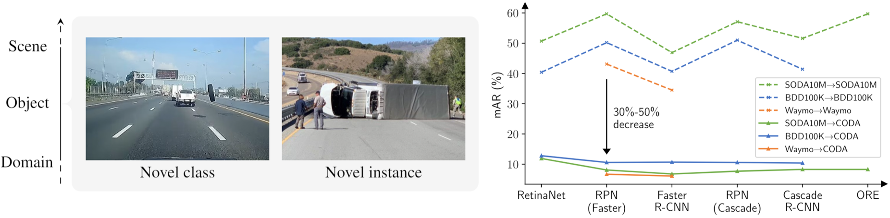
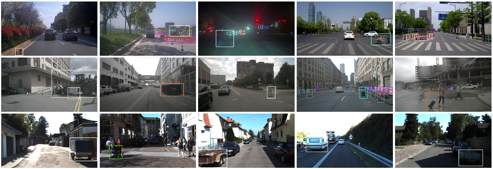

About
Deep learning has achieved prominent success in detecting common traffic participants (e.g., cars, pedestrians, and cyclists). Such detectors, however, are generally incapable of detecting novel objects that are not seen or rarely seen in the training process, generally called (object-level) corner cases, which consist of two categories, namely 1) instance of novel class (e.g., a runaway tire) and 2) novel instance of common class (e.g., an overturned truck). Properly dealing with corner cases has become the essential key to reliable autonomous driving perception systems.
We introduce CODA, the currently largest public real-world road corner case for object detection in autonomous driving, containing 1500 carefully selected real-world driving scenes with high-quality image domain tags and bounding box annotation for 34 representative object categories. Our CODA is constructed from three major real-world object detection datasets including KITTI, nuScenes and ONCE, covering diverse driving scenes in cities of both Asia and Europe.
Previous state-of-the-art object detectors trained on large-scale autonomous driving datasets suffer from a significant performance drop deployed on CODA, with the best performance achieved at 12.8% mAR, suggesting that reliable object detection is still far from solved. We hope CODA can serve as a more challenging benchmark to promote reliable object detection systems.
Examples
Corner cases are indicated by the bounding boxes, while each color stands for a different object class.
Annoucement
- The CODA official website has been online! (2021/11/23)
- The CODA sample set has been released! (2021/11/24)